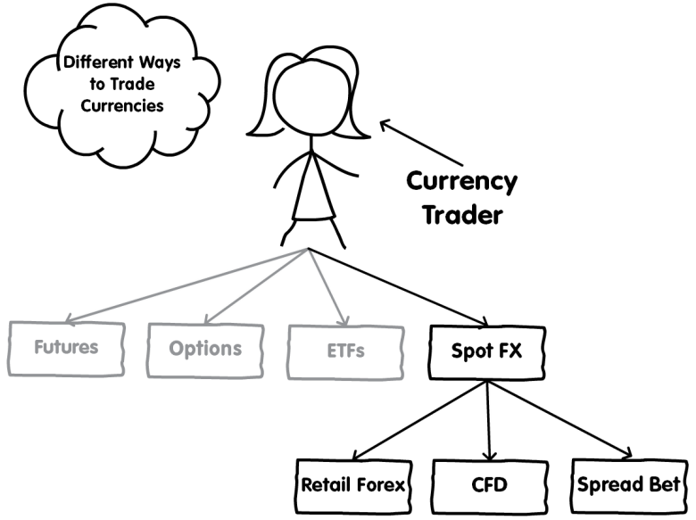
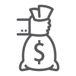

How do people participate in the forex market?
So far, you’ve learned what the forex market is, how big it is, the different types of currencies and how they are sold in pairs.
But how do you trade forex?
Let’s now take a look at how to participate as a trader.
Because forex is so awesome, traders came up with a number of different ways to invest or speculate in currencies.
Among the financial instruments, the most popular ones are retail forex, spot FX, currency futures, currency options, currency exchange-traded funds (or ETFs), forex CFDs, and forex spread betting.

It’s important to point out that we are covering the different ways that individual (“retail”) traders can trade FX.
Other financial instruments like FX swaps and forwards are not covered since they cater to institutional traders.
With that out of the way, let’s now discuss how you can partake in the world of forex.
Futures are contracts to buy or sell a certain asset at a specified price on a future date (That’s why they’re called futures!).
A currency future is a contract that details the price at which a currency could be bought or sold and sets a specific date for the exchange.
Currency futures were created by the Chicago Mercantile Exchange (CME) way back in 1972 when bell-bottoms and platform boots were still in style.
Since futures contracts are standardized and traded on a centralized exchange, the market is very transparent and well-regulated.
This means that price and transaction information are readily available.
An “option” is a financial instrument that gives the buyer the right or the option, but not the obligation, to buy or sell an asset at a specified price on the option’s expiration date.
If a trader “sold” an option, then he or she would be obliged to buy or sell an asset at a specific price at the expiration date.
Just like futures, options are also traded on an exchange, such as the Chicago Mercantile Exchange (CME), the International Securities Exchange (ISE), or the Philadelphia Stock Exchange (PHLX).
However, the disadvantage in trading FX options is that market hours are limited for certain options and the liquidity is not nearly as great as the futures or spot market.
A currency ETF offers exposure to a single currency or basket of currencies.
Currency ETFs allow ordinary individuals to gain exposure to the forex market through a managed fund without the burdens of placing individual trades.
Currency ETFs can be used to speculate on forex, diversify a portfolio, or hedge against currency risks.
ETFs are created and managed by financial institutions that buy and hold currencies in a fund. They then offer shares of the fund to the public on an exchange allowing you to buy and trade these shares just like stocks.
Like currency options, the limitation in trading currency ETFs is that the market isn’t open 24 hours. Also, ETFs are subject to trading commissions and other transaction costs.
The spot FX market is an “off-exchange” market, also known as an over-the-counter (“OTC”) market.
The off-exchange forex market is a large, growing, and liquid financial market that operates 24 hours a day.
It is not a market in the traditional sense because there is no central trading location or “exchange”.
In an OTC market, a customer trades directly with a counterparty.
Unlike currency futures, ETFs, and (most) currency options, which are traded through centralized markets, spot FX are over-the-counter contracts (private agreements between two parties).
Most of the trading is conducted through electronic trading networks (or telephone).
The primary market for FX is the “interdealer” market where FX dealers trade with each other. A dealer is a financial intermediary that stands ready to buy or sell currencies at any time with its clients.
The interdealer market is also known as the “interbank” market due to the dominance of banks as FX dealers.
The interdealer market is only accessible to institutions that trade in large quantities and have a very high net worth.
This includes banks, insurance companies, pension funds, large corporations, and other large financial institutions manage the risks associated with fluctuations in currency rates.
 In the spot FX market, an institutional trader is buying and selling an agreement or contract to make or take delivery of a currency.
A spot FX transaction is a bilateral (“between two parties”) agreement to physically exchange one currency against another currency.
This agreement is a contract. This means this spot contract is a binding obligation to buy or sell a certain amount of foreign currency at a price that is the “spot exchange rate” or the current exchange rate.
So if you buy EUR/USD on the spot market, you are trading a contract that specifies that you will receive a specific amount of euros in exchange for U.S dollars at an agreed-upon price (or exchange rate).
It’s important to point out that you are NOT trading the underlying currencies themselves, but a contract involving the underlying currencies.
Even though it’s called “spot”, transactions aren’t exactly settled “on the spot”.
In reality, while a spot FX trade is done at the current market rate, the actual transaction is not settled until two business days after the trade date.
This is known as T+2 (“Today plus 2 business days”).
It means that delivery of what you buy or sell should be done within two working days and is referred to as the value date or delivery date.
For example, an institution buys EUR/USD in the spot FX market.
The trade opened and closed on Monday has a value date on Wednesday. This means that it’ll receive euros on Wednesday.
Not all currencies settle T+2 though. For example, USD/CAD, USD/TRY, USD/RUB and USD/PHP value date is T+1, meaning one business day going forward from today (T).
Trading in the actual spot forex market is NOT where retail traders trade though.
There is a secondary OTC market that provides a way for retail (“poorer”) traders to participate in the forex market.
Access is granted by so-called “forex trading providers“.
Forex trading providers trade in the primary OTC market on your behalf. They find the best available prices and then add a “markup” before displaying the prices on their trading platforms.
This is similar to how a retail store buys inventory from a wholesale market, adds a markup, and shows a “retail” price to their customers.
Forex trading providers are also known as “forex brokers”. Technically, they are not brokers because a broker is supposed to simply act as a middleman between a buyer and a seller (“between two parties”). But this is not the case, because a forex trading provider acts as your counterparty. This means if you are the buyer, it acts as the seller. And if you are the seller, it acts as the buyer. To keep things simple for now, we will still use the term “forex broker” since that’s what most people are familiar with but it’s important to know the difference.
Although a spot forex contract normally requires delivery of currency within two days, in practice, nobody takes delivery of any currency in forex trading.
The position is “rolled” forward on the delivery date.
Especially in the retail forex market.
Remember, you are actually trading a contract to deliver the underlying currency, rather than the currency itself.
It’s not just a contract, it’s a leveraged contract.
Retail forex traders can’t “take or make delivery” on leveraged spot forex contracts.
Leverage allows you to control large amounts of currency for a very small amount.
Retail forex brokers let you trade with leverage which is why you can open positions valued at 50 times the amount of the initial required margin.
So with $2,000, you can open a EUR/USD trade valued at $100,000.
Imagine if you went short EUR/USD and had to deliver $100,000 worth of euros!
You’d be unable to settle the contract in cash since you only have $2,000 in your account. You wouldn’t have enough funds to cover the transaction!
So you either have to close the trade before it settles or “roll” it over.
To avoid this hassle of physical delivery, retail forex brokers automatically “roll” client positions.
When a spot forex transaction is not physically delivered but just indefinitely rolled forward until the trade is closed, it is known as a “rolling spot forex transaction” or “rolling spot FX contract“. In the U.S., the CFTC calls it a “retail forex transaction“.
This is how you avoid being forced to accept (or deliver) 100,000 euros.
Retail forex transactions are closed out by entering into an equal but opposite transaction with your forex broker.
For example, if you bought British pounds with U.S. dollars, you would close out the trade by selling British pounds for U.S. dollars.
This is also called offsetting or liquidating a transaction.
If you have a position left open at the close of the business day, it will be automatically rolled over to the next value date to avoid the delivery of the currency.
Your retail forex broker will automatically keep on rolling over your spot contract for you indefinitely until it is closed.
The procedure of rolling the currency pair over is known as Tomorrow-Next or “Tom-Next“, which stands for “Tomorrow and the next day.”
When positions are rolled over, this results in either interest being paid or earned by the trader.
These charges are known as a swap fee or rollover fee. Your forex broker calculates the fee for you and will either debit or credit your account balance.
Retail forex trading is considered speculative. This means traders are trying to “speculate” or make bets on (and profit from) the movement of exchange rates. They’re not looking to take physical possession of the currencies they buy or deliver the currencies they sell
Spread betting is a derivative product, which means you don’t take ownership of the underlying asset but speculate on whichever direction you think its price will move up or down
A forex spread bet enables you to speculate on the future price direction of a currency pair.
A currency pair’s price being used on the spread bet is “derived” from the currency pair’s price on the spot FX market.
Your profit or loss is dictated by how far the market moves in your favor before you close your position and how much money you have bet per “point” of price movement.
Spread betting on forex is provided by “spread betting providers“.
Unfortunately, if you live in the U.S., spread betting is considered illegal. Despite being regulated by the FSA in the U.K., the U.S. considers spread betting to be internet gambling which is currently forbidden.
A contract for difference (“CFD”) is a financial derivative. Derivative products track the market price of an underlying asset so that traders can speculate on whether the price will rise or fall.
The price of a CFD is “derived” from the underlying asset’s price.
A CFD is a contract, typically between a CFD provider and a trader, where one party agrees to pay the other the difference in the value of a security, between the opening and closing of the trade.
In other words, a CFD is basically a bet on a particular asset going up or down in value, with the CFD provider and you agree that whoever wins the bet will pay the other the difference between the asset’s price when you enter the trade and its price when you exit the trade.
A forex CFD is an agreement (“contract”) to exchange the difference in the price of a currency pair from when you open your position versus when you close it.
A currency pair’s CFD price is “derived” from the currency pair’s price on the spot FX market. (Or at least it should be. If not, what is the CFD provider basing its price on? 🤔)
Trading forex CFDs gives you the opportunity to trade a currency pair in both directions. You can take both long and short positions.
If the price moves in your chosen direction, you would make a profit, and if it moves against you, you would make a loss.
In the EU and UK, regulators decided that “rolling spot FX contracts” are different from the traditional spot FX contract.
The main reason being is that with rolling spot FX contracts, there is no intention to ever take actual physical delivery (“take ownership”) of a currency, its purpose is to simply speculate on the price movement in the underlying currency.
The objective of trading a rolling spot FX contract is to gain exposure to price fluctuations related to the underlying currency pair without actually owning it.
So to make this differentiation clear, a rolling spot FX contract is ruled as a CFD. (In the U.S., CFDs are illegal so it’s known as a “retail forex transaction”)
Forex CFD trading is provided by “CFD providers“.
Outside the U.S., retail forex trading is usually done with CFDs or spread bets.